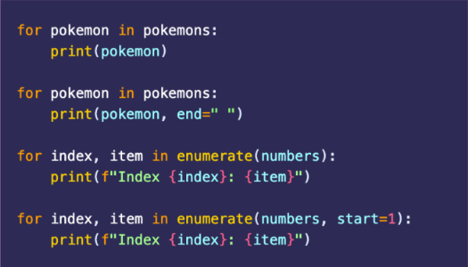

Computer Programming 2

Week 01
Transforming Sequences
Learning Objectives
- Undersatnd the concept of mutability
- Master common list manipulation techniques, including deletion and slicing.
- Grasp the basics of objects and references to set the stage for aliasing and object-oriented programming.
Mutability: Objects that can change their state after creation.
Example:
- Lists
- Dictionaries
Immutability: Objects that cannot change their state after creation.
Example:
- Strings
- Tuples
Mutability impacts performance, memory, and thread safety.

Mutability: Performance
Mutable Types:
- Reusability of memory. Allow modification without creating a new object. Efficient for frequent updates to the same data structure. May need more memory if they grow too big.
Immutable Types:
- Copy Overhead. Requires creating a new object for every change, that result to increasing computational overhead. Predictable behavior and less risk in accidental side effects. Higher memory usage and slower operations for frequent updates.
Mutability: Memory
Mutable Types:
- Shared References. Multiple variables can point to the same mutable object, reducing memory usage. Unintended changes by one reference affect all references.
Immutable Types:
- Object Duplication. Stored separately in memory. Changing requires more memory. Each object is independent, avoiding unintended side effects.
Mutability: Thread safety
Mutable Types:
- Risk of Data Races. If a male object is shared between threads, concurrent modifications can lead to unpredictable behavior or data corruption.
Immutable Types:
- Thread-Safe by Default. Immutable objects are inherently thread-safe because their state cannot change after creation. Simplifies concurrent programming by avoiding data races.
Adding Elements (append(), insert(), extend())
-
append(element) - Adds a single element to the end of the list.
insert(index, element) - Inserts an element at a specific index in the list. The indices of subsequent elements are shifted to the right.
Append(element) - Adds a single element to the end of the list.
Extend(iterable) - Extends the list by adding all elements from another iterable. (e.g., list, tuple, set). Each element of the iterable is added individually to the end of the list.
Deleting Elements (remove(), del(), pop(), slicing())
-
remove(value) - Removes the first occurence of a specified value from the list. Raises a ValueError if the value does not exist
del list[index, range] - Deletes elements or slices from the listusing an index or range. It can also delete the entire list.
pop() - Removes and returns the element at a specified index (default is the last element). Raises an IndexError if the list is empty or the index is out of range.
slice - Creates a new list by extracting a subset of elements using the slice notation (start:stop:step). Does not modify the original list.

Alias
- In Python, aliasing occurs when two or more variables reference the same object in memory. This means that a change to the object through one variable will be reflectes when accessed through the other variables.
- Alliasing is common with lists, dictionaries, and other mutable objects.
- Be cautious of unintended modifications when working with shared references.

Printing List
String to List
Week 02
Transforming Sequences part 2
Learning Objectives
- Understand the concept of aliasing and its pitfalls.
- Learn techniques to clone lists and avoid unintentional changes.
- Differentiate between mutating and non-mutating methods.
- Explore non-mutating methods in strings.
Mutability
- Aliasing occurs when multiple variables refer to the same object in memory.
- Changes made to one alias affect the others.
- Can lead to unexpected bugs.

Avoiding Pitfalls of Aliasing

Mutating vs. Non-Mutating Methods
Mutable Methods:
- Modify the original data: append(), extend(), remove()
- Return a new object without modifying the original:
- sorted(iterable, key=None, reverse=False). function returns a new sorted list from the elements of any iterable (e.g., list, tuple, string) without modifying the original data
- reversed(iterable). returns a reverse iterator that allows you to traverse the elements of an iterable in reverse order. It does not modify the original iterable.
- slicing
EXAMPLE: sorted()

EXAMPLE: reversed()

Non-Mutating String Methods
- Strings in Python are immutable, meaning their content cannot be changed.
- str.upper() - Converts to uppercase.
- str.lower() - Converts to lowercase.
- str.replace(old, new, count) - Replaces part of the string.
- split.(separator) - Splits the string into a list.
- separator.join(iterable) - Joins elements into a string.
EXAMPLE: str methods

Accumulator pattern
EXAMPLE: str methods


Potential Issue: Repeated concatenation with += creates a new string in memory each time, which can be inefficient for large inputs.
Week 03
File Handling
Learning Objectives
- Understand the basics of reading and writing files in Python.
- Manipulate CSV files, a common format for data exchange.
- Use the accumulator pattern in combination with file handling to solve practical tasks.
- Explore non-mutating methods in strings.
Introduction to File Handling
Why File Handling?
- Store data for long-term use.
- Share and process data between systems.
- 'r' - Read
- 'w' - Write (overwrite)
- 'a' - Append
- 'rb'/'wb' - Binary read/write
READING
Reading Files- Always close files or use with to handle files safely.
- Read files line-by-line to save memory for large files.
WRITING
- Writing overwrites the file unless 'a' mode is used
- Use \n to add new lines.
APPEND
Append to a file- The 'a' mode in Python file handling stands for append mode. When you open a file in 'a' mode, the data you write to the file will be added to the end of the file without overwriting its existing contents. If the file does not exist, it will be created.
BINARY FILE
- The rb (read binary) and wb (write binary) modes are used to handle files in binary format. These modes are typically used for non-text files such as images, audio files, or other binary data.
WORKING WITH CSV FILES
What is a CSV?- A simple text format to store tabular data.
- Rows are separated by newlines, and columns by commas.
- Widely supported in software and programming languages.
- Easy to read and write using Python.
Reading CSV Files
- The csv.reader parses the file into a list of rows.
Writing CSV Files
- Use newline=" to avoid extra blank lines on some systems.